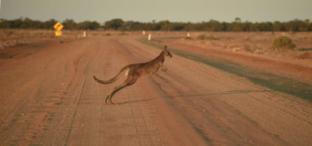
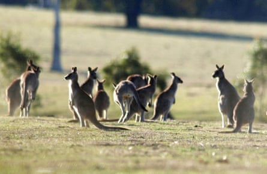
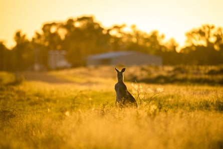

The bill, introduced into the US Senate last month, came with plenty of emotive and uncompromising language.
“The mass killing of millions of kangaroos to make commercial products is needless and inhumane,” said the Democratic senator Tammy Duckworth, as she introduced the Kangaroo Protection Act to ban the sale and manufacture of kangaroo products in the US.
With the high-profile former Democratic presidential nominee Cory Booker as a co-sponsor, the two senators said Australia’s commercial kangaroo harvest was “unnecessarily cruel” and their proposed ban would protect “millions of wild kangaroos and their innocent babies who are needlessly killed every year”.
Backed by animal rights campaigners, the move is the latest in a string of attempts in recent years in the US Congress to ban kangaroo products. A similar push is ongoing in Europe.
Last week the Center for a Humane Economy, which runs the Kangaroos Are Not Shoes campaign, announced British sportswear brand Umbro was the latest to join the likes of Nike, Adidas, Puma and Asics in phasing out the use of so-called “k-leather” that has most often been used in some of their brand’s football boots.
But the success of the campaigns, and the ongoing criticism of Australia’s regulated kangaroo harvests, hides a complex story and one which, Prof Chris Johnson says, is “infuriating” for many Australian conservationists and ecologists.
“The public advocacy by opponents has been very effective, but unfortunately it’s all wrong, is conceptually muddled and it’s not based on knowledge or experience,” says Johnson, a kangaroo expert and professor of wildlife conservation at the Australian Research Council Centre of Excellence for Australian Biodiversity and Heritage.
A US ban would be harmful to kangaroo populations, Nationals leader David Littleproud says.Photograph: Peter Parks/AFP/Getty Images
The Nationals leader and shadow agriculture minister, David Littleproud, accused the governing Labor party of failing to “dispel misconceptions around the use and overseas imports of kangaroo products”.
“This has allowed animal activists to spread false information that kangaroos are being killed solely for [soccer] cleats.
“It’s important to note that without a commercial industry, conservation culling is still needed to occur to manage populations.
“We know kangaroos can breed easily and are not a threatened species. The practical reality of import bans in the US would be detrimental to kangaroo populations in Australia.”
The government did not answer questions sent to the agriculture minister, Julie Collins.
The kangaroo ‘harvest’
Since European colonisation, farmers have grown pasture for livestock and added watering holes across Australia’s landscape, both of which help kangaroos to survive and, in times of good rainfall, flourish.Governments have backed controls and culls of the kangaroo’s natural predator – the dingo.
Johnson says grazing from abundant kangaroos can take away areas that other native animals such as bandicoots and dunnarts use to hide from introduced predators like cats and foxes.
“Overgrazing can be a serious ecological threat,” he says.
“The harvest protects other native species because it protects vegetation. If the kangaroo program fails, that would be a contributor to increased extinction threat.”
Regulated commercial kangaroo harvesting takes place every year in New South Wales, Victoria, Queensland, South Australia and Western Australia.
Since 2010, data collated by the Australian government shows that between 1.1 million and 1.7 million kangaroos have been killed annually under the commercial harvest.
Harvest quotas are set at about 15% of the estimated kangaroo population, but the data suggests less than a third of the quota is used up each year.
Barbaric or humane?
Kangaroo harvesting takes place at night, and a national code of practice says the animals should be killed by a bullet to the head.
Ben Pearson, Australia and New Zealand country director for World Animal Protection, says this method of killing, coupled with a lack of oversight of both commercial and non-commercial kangaroo culling, which is also done under licence, is a concern.
“In other animal farming industries there is a requirement for humane slaughter which includes stunning before slaughter,” he says.
“With wild harvesting, kangaroos are shot outright and evidence suggests that many are not killed instantaneously, instead being merely wounded and thus suffering from gunshot wounds. Kangaroos that are wounded but escape could suffer over a prolonged period.”
Campaigners say they oppose ‘the killing of kangaroos for non-essential items like football boots’.Photograph: Joe Castro/AAP
A 2021 inquiry in the New South Wales parliament on kangaroo welfare found there was a lack of monitoring at the “point of kill” for both commercial and non-commercial shooting, but the state government supported only two of the 23 recommendations in full .
The inquiry heard that kangaroo kills were deeply distressing for some Aboriginal people, and animal rights groups said kangaroos had a right to live freely without human interference.
If female kangaroos are shot, harvesters can find young joeys still alive in the mother’s pouch.
A national code of practice for commercial kangaroo harvesting recommends joeys are killed using blunt force trauma to the back of the head, and suggests using the tray of a utility vehicle as a suitable immovable object.
It’s a method which Pearson says is “barbaric”.
“On an ethical level, we are opposed to the killing of kangaroos for non-essential items like football boots, particularly given alternatives exist and are in widespread use,” he says.
Kangaroo numbers are known to boom in times of good rainfall and then crash during droughts.Photograph: Stuart Walmsley/AAP
Neal Finch is a wildlife ecologist and executive officer of the Australian Wild Game Industry Council, which represents kangaroo harvesters.
He says the codes of practice of the kind covering kangaroo harvesting do not exist in other jurisdictions.
“It is not that we are inhumane. It is that we are exemplary,” he claims.
“Over 6 million native deer are killed in the USA every year. Over-abundant herbivores need management. The code of practice for shooting kangaroos requires a shot to the brain. Virtually all deer shot in the USA are shot in the chest.
“The reason campaigners can quote how many kangaroos are killed is because we actually publish that information,” he said.
Boom, bust and starvation
Kangaroo numbers are known to boom in times of good rainfall and then crash during droughts – swings that mirror Australia’s variable climate.
Between 2010 and 2023, official estimates of kangaroo numbers across four states show numbers fell as low as 25 million in 2010 and went as high as 53 million in 2013. Latest figures estimate a kangaroo population of 34 million .
“We either choose to sustainably harvest these kangaroo populations or we will see kangaroos starve in their many thousands during droughts, and habitats will be overgrazed and degraded,” says Prof Euan Ritchie, a wildlife ecologist at Deakin University. “It’s a choice.”
As uncomfortable as the thought may be for many, Johnson says that in lean times, many kangaroo deaths may not be as short and sharp as one from a harvester’s gun.
“The natural alternatives are being killed by a dingo or dying by starvation,” he says.
“There’s less suffering entailed by the harvest than by either of those alternatives.”